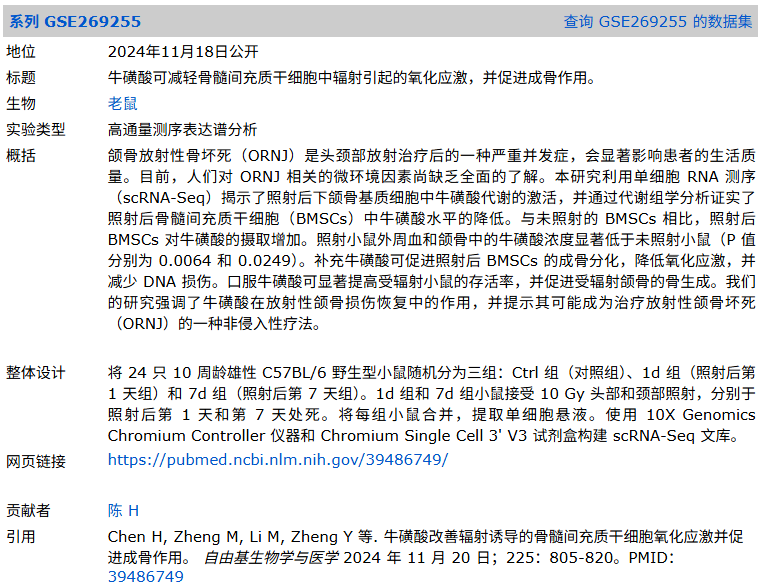
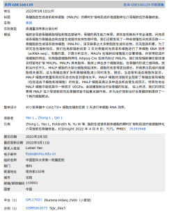
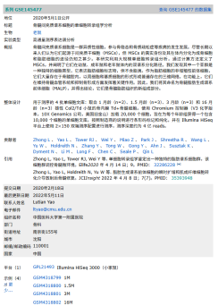
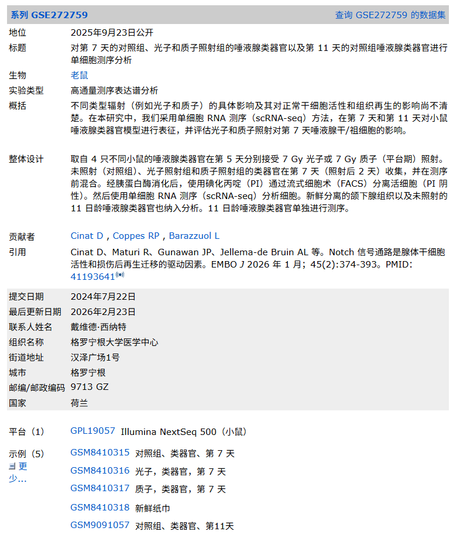

| GEO |
GSE269255
放射性颌骨坏死 27(https://www.ncbi.nlm.nih.gov/geo/query/acc.cgi?acc=GSE269255)
单细胞 |
小鼠体内照射模型
 |
下颌/颌骨基质细胞（mandibular stromal cells）27(https://www.ncbi.nlm.nih.gov/geo/query/acc.cgi?acc=GSE269255) |
3 个库（Ctrl、照后1天、照后7天；每组多只小鼠合并）27(https://www.ncbi.nlm.nih.gov/geo/query/acc.cgi?acc=GSE269255) |
processed counts（MTX/TSV）；原始 reads 在 SRA27(https://www.ncbi.nlm.nih.gov/geo/query/acc.cgi?acc=GSE269255) |
是
GEO 27(https://www.ncbi.nlm.nih.gov/geo/query/acc.cgi?acc=GSE269255) |
10.1016/j.freeradbiomed.2024.10.308 28(https://www.sciencedirect.com/science/article/abs/pii/S0891584924010165)
https://pubmed.ncbi.nlm.nih.gov/39486749/ |
10 Gy 头颈照射，主要体现早期照射后微环境变化；并非“确诊晚期ORN坏死骨”样本27(https://www.ncbi.nlm.nih.gov/geo/query/acc.cgi?acc=GSE269255) |
| GEO |
GSE166129 38(https://www.ncbi.nlm.nih.gov/geo/query/acc.cgi?acc=GSE166129)单细胞 |
小鼠
体内局部照射
 |
骨髓间充质谱系细胞（Col2/Td+；照后第3天）38(https://www.ncbi.nlm.nih.gov/geo/query/acc.cgi?acc=GSE166129) |
1 个库（5 Gy day3）38(https://www.ncbi.nlm.nih.gov/geo/query/acc.cgi?acc=GSE166129) |
processed counts（MTX/TSV）；原始 reads 在 SRA38(https://www.ncbi.nlm.nih.gov/geo/query/acc.cgi?acc=GSE166129) |
是（GEO 公共）38(https://www.ncbi.nlm.nih.gov/geo/query/acc.cgi?acc=GSE166129) |
https://insight.jci.org/articles/view/150323#FN
https://www.sciencedirect.com/science/article/pii/S0264127525010469#ab010 |
放疗后骨髓修复/纤维化样转归研究的单细胞证据；对理解“放疗抑制成骨+免疫炎症”有间接价值38(https://www.ncbi.nlm.nih.gov/geo/query/acc.cgi?acc=GSE166129) |
| GEO |
GSE145477 39(https://www.ncbi.nlm.nih.gov/geo/query/acc.cgi?acc=GSE145477)单细胞 |
小鼠（稳态/年龄）
正常组
 |
骨髓间充质谱系细胞（endosteal Td+ bone marrow）39(https://www.ncbi.nlm.nih.gov/geo/query/acc.cgi?acc=GSE145477) |
4 个库（不同月龄）39(https://www.ncbi.nlm.nih.gov/geo/query/acc.cgi?acc=GSE145477) |
processed counts（补充文件）；原始 reads 在 SRA39(https://www.ncbi.nlm.nih.gov/geo/query/acc.cgi?acc=GSE145477) |
是（GEO 公共）39(https://www.ncbi.nlm.nih.gov/geo/query/acc.cgi?acc=GSE145477) |
https://insight.jci.org/articles/view/150323#FN
https://www.sciencedirect.com/science/article/pii/S0264127525010469#ab010 |
对照“正常骨髓MSC/MALP谱系结构”，用于解释放疗后MSC→纤维化/脂肪化倾向39(https://www.ncbi.nlm.nih.gov/geo/query/acc.cgi?acc=GSE145477) |
| SRA |
PRJNA697839 29(https://www.nature.com/articles/s41413-021-00141-5) 单细胞 |
小鼠（稳态）
正常组 |
下颌牙槽骨（mandibular alveolar bone）30(https://www.nature.com/articles/s41413-021-00141-5) |
文中合并 8 只小鼠制备；QC 后约 10,224 细胞30(https://www.nature.com/articles/s41413-021-00141-5) |
raw fastq（SRA）；processed 未在该段落明确29(https://www.nature.com/articles/s41413-021-00141-5) |
是（SRA 公共）29(https://www.nature.com/articles/s41413-021-00141-5) |
10.1038/s41413-021-00141-5 30(https://www.nature.com/articles/s41413-021-00141-5) |
可作为“颌骨骨髓/牙槽骨免疫微环境基线”参考，便于对照辐射损伤/坏死状态30(https://www.nature.com/articles/s41413-021-00141-5) |
| GEO |
GSE223516 31(https://www.ncbi.nlm.nih.gov/geo/query/acc.cgi?acc=GSE223516)
单细胞 |
小鼠
体内慢性照射后
唾液腺照射 |
腮腺（parotid gland）31(https://www.ncbi.nlm.nih.gov/geo/query/acc.cgi?acc=GSE223516) |
2 个库（照射 vs 对照）31(https://www.ncbi.nlm.nih.gov/geo/query/acc.cgi?acc=GSE223516) |
processed counts（MTX/TSV）；原始 reads 在 SRA31(https://www.ncbi.nlm.nih.gov/geo/query/acc.cgi?acc=GSE223516) |
是（GEO 公共）31(https://www.ncbi.nlm.nih.gov/geo/query/acc.cgi?acc=GSE223516) |
10.1016/j.isci.2023.106660 33(https://www.sciencedirect.com/science/article/pii/S258900422300737X) |
“10 个月照后慢性损伤”模型，偏向头颈放疗唾液腺毒性；与ORN同属头颈放疗并发症生态34(https://www.sciencedirect.com/science/article/pii/S258900422300737X) |
| Figshare |
10.6084/m9.figshare.20406219 35(https://doi.org/10.6084/m9.figshare.20406219)单细胞 |
小鼠
唾液腺照射 |
腮腺（parotid gland）35(https://doi.org/10.6084/m9.figshare.20406219) |
1 个集成对象（对照+照射）35(https://doi.org/10.6084/m9.figshare.20406219) |
Seurat 集成对象（RDS/对象包）35(https://doi.org/10.6084/m9.figshare.20406219) |
是（CC BY 4.0）35(https://doi.org/10.6084/m9.figshare.20406219) |
10.1016/j.isci.2023.106660 33(https://www.sciencedirect.com/science/article/pii/S258900422300737X) |
提供“即用型”对象，降低复现实验门槛；与 GSE223516 对应36(https://www.sciencedirect.com/science/article/pii/S258900422300737X) |
| GEO |
GSE272759 37(https://www.ncbi.nlm.nih.gov/geo/query/acc.cgi?acc=GSE272759)单细胞 |
小鼠
（类器官+组织）
 |
唾液腺类器官照射（photon/proton 照射）+ 新鲜颌下腺组织37(https://www.ncbi.nlm.nih.gov/geo/query/acc.cgi?acc=GSE272759) |
5 个库（D7 对照/光子/质子 + 新鲜组织 + D11 对照类器官）37(https://www.ncbi.nlm.nih.gov/geo/query/acc.cgi?acc=GSE272759) |
processed counts（MTX/TSV）；原始 reads 在 SRA37(https://www.ncbi.nlm.nih.gov/geo/query/acc.cgi?acc=GSE272759) |
是（GEO 公共）37(https://www.ncbi.nlm.nih.gov/geo/query/acc.cgi?acc=GSE272759) |
未在GEO页直接给出 DOI（提供 PMID 线索）37(https://www.ncbi.nlm.nih.gov/geo/query/acc.cgi?acc=GSE272759) |
可用于比较不同射线类型对头颈区腺体/祖细胞生态影响；与ORN共享“放疗微环境改变”上游机制37(https://www.ncbi.nlm.nih.gov/geo/query/acc.cgi?acc=GSE272759) |
| GEO |
GSE193110 40(https://www.ncbi.nlm.nih.gov/geo/query/acc.cgi?acc=GSE193110)单细胞 |
小鼠（疾病模型）
双磷酸盐骨坏死 |
牙龈（palatal gingiva；BRONJ 模型）40(https://www.ncbi.nlm.nih.gov/geo/query/acc.cgi?acc=GSE193110) |
2 个库（BRONJ 对照 vs HMDP-DNV 治疗）40(https://www.ncbi.nlm.nih.gov/geo/query/acc.cgi?acc=GSE193110) |
processed（补充包）；原始 reads 在 SRA40(https://www.ncbi.nlm.nih.gov/geo/query/acc.cgi?acc=GSE193110) |
是（GEO 公共）40(https://www.ncbi.nlm.nih.gov/geo/query/acc.cgi?acc=GSE193110) |
未在GEO页直接给出 DOI40(https://www.ncbi.nlm.nih.gov/geo/query/acc.cgi?acc=GSE193110) |
虽非放疗，但同属“颌骨坏死”谱系；可作为坏死相关口腔屏障免疫参照（病因外推受限）40(https://www.ncbi.nlm.nih.gov/geo/query/acc.cgi?acc=GSE193110) |
| GEO |
GSE303003 41(https://www.ncbi.nlm.nih.gov/geo/query/acc.cgi?acc=GSE303003)单细胞 |
人（临床）
药物相关性颌骨骨坏死 |
腐骨/死骨（sequestrum）周围肉芽组织：MRONJ vs 根尖囊肿对照41(https://www.ncbi.nlm.nih.gov/geo/query/acc.cgi?acc=GSE303003) |
2 个库（各为4人 multiplex；总计8例样本，其中 MRONJ 4 例）41(https://www.ncbi.nlm.nih.gov/geo/query/acc.cgi?acc=GSE303003) |
processed counts（MTX/TSV）；原始 reads 在 SRA41(https://www.ncbi.nlm.nih.gov/geo/query/acc.cgi?acc=GSE303003) |
是（GEO 公共）41(https://www.ncbi.nlm.nih.gov/geo/query/acc.cgi?acc=GSE303003) |
暂无 DOI（GEO 标注“Citation missing”）41(https://www.ncbi.nlm.nih.gov/geo/query/acc.cgi?acc=GSE303003) |
最接近“临床颌骨坏死周围组织”的公开 scRNA 数据；但病因是抗骨吸收药物而非放疗41(https://www.ncbi.nlm.nih.gov/geo/query/acc.cgi?acc=GSE303003) |